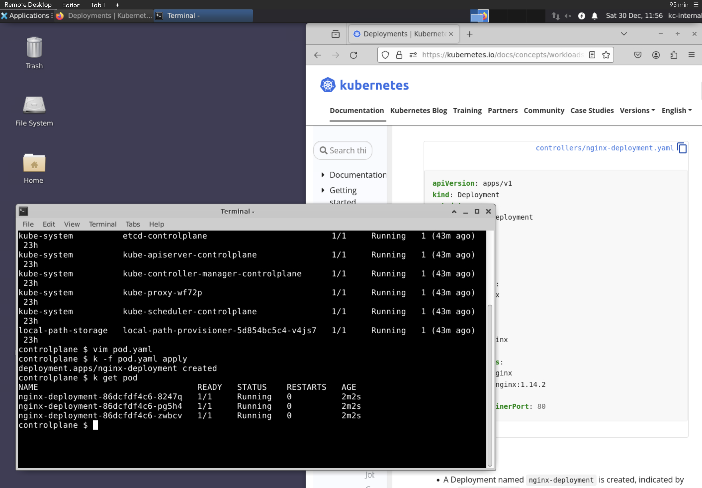

Context
The following contains information about the exam.
Exam Environment
Below is a screenshot of the exam environment. This article goes into some detail about the exam environment.

- The CKAD exams use a Remote Desktop based on XFCE
- You'll need to use the remote Firefox browser to access the K8s docs
General Information
Exam issues with current resolutions
lag
- Some lag is expected in a remote-desktop/VNC connection environment, such as when moving windows or scrolling through pages like CNCF documentation.
Copy/Paste and Keyboard Shortcuts
The Linux Remote Desktop is a traditional Linux Environment and candidates need to use Linux Keyboard Shortcuts. The Terminal is a Linux Terminal, and candidates need to use Linux Terminal keyboard shortcuts: * Copy = CTRL+SHIFT+C * Paste = CTRL+SHIFT+V for Paste * OR Use the Right Click Context Menu and select Copy or Paste
Personal Bookmarks/ Chrome Browser Not Available
- The Linux Remote Desktop includes a Firefox Browser; candidates are prohibited from accessing all sites except those listed in our Resources Allowed Policy.
- Personal browser bookmarks (such as bookmarked links to YAML files) are not accessible within the PSI Secure Browser.
- All Exam items have been updated with “Documentation Quick Links”, which provide links to the official Kubernetes documentation related to a handful of Kubernetes topics that might be required to solve a task.
- The Kubernetes documentation pages have been carefully selected to fit the topics and typically provide one or more YAML files that might help kickstart working on a task.
What you will need
- A computer see system requirement
- Reliable internet access
- Microphone - Mac users may need to allow the PSI Secure Browser within their 'System Preferences: Security & Privacy: Privacy' settings for Microphone, Camera, Automation and Input Monitoring.
- Webcam - Mac users may need to allow the PSI Secure Browser within their 'System Preferences: Security & Privacy: Privacy' settings for Microphone, Camera, Automation and Input Monitoring.
Expectations for an acceptable testing environment
Clutter-free work area
- No objects such as paper, writing implements, electronic devices, or other objects on top of surface
- No objects such as paper, trash bins, or other objects below the testing surface
Clear walls
- No paper/print outs hanging on walls
- Paintings and other wall décor is acceptable
- Candidates will be asked to remove non-décor items prior to the exam being released
Lighting
- Space must be well lit so that proctor is able to see candidate’s face, hands, and surrounding work area
- No bright lights or windows behind the examinee
Other
- Candidate must remain within the camera frame during the examination
- Space must be private where there is no excessive noise. Public spaces such as coffee shops, stores, open office environments, etc. are not allowed.
FAQs
How long will the exam take?
Candidates are allowed 2 hours to complete exams.
What score is needed to pass the exam?
A score of 66% or above must be earned to pass.
What resources am I allowed to access during my exam?
During the exam, candidates may use the browser within the VM to access the following documentation:
Where can I find practice questions for CKAD
Candidates who register for the exam will have access to an exam simulator, provided by Killer.sh.
Login to My Portal and click Start/Resume to view your exam preparation checklist. The link to the Simulator is available on the Top Right-Hand corner of the Exam Preparation Checklist.
Is there training to prepare for the certification exam?
The Linux Foundation offers a free Introduction to Kubernetes course which provides an introduction to many key concepts for Kubernetes. The Fundamentals of Kubernetes (LFS258) course builds on this introductory material and is designed as preparation for the Certified Kubernetes Administrator Exam.
The topics covered in the Kubernetes for Developers (LFS259) course are directly aligned with the knowledge domains tested by the Certified Kubernetes Application Developer Exam.